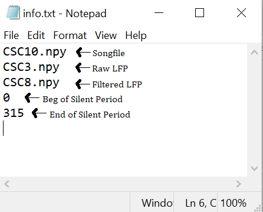

-
Taking in consideration the fact that usually we work with several folders of data, we developed a secondary set of codes that allows the user to obtain results in a faster way.
This page will provide you a little tutorial of how to use our combinations of codes. The codes can be found in the Code_Several_Folders in our repository.
- 1 - First, you should understand the structure of folders that the code expects.
The files/folders in black have to be created by the user before using the code. Meaning that each Rec folder has to have the .smr file and the file with the labels (Examples can be found in the "Files" section).
The files in orange are optional. The user can create them before using the code, but in case they are not present, the code will create for you.
The file info.txt contains 5 key information that have to be put in the right order inside the file: The .npy that will contain the song signal; the .npy that will contain the LFP raw signal; the .npy that will contain the LFP filtered signal; the beggining of the silent period; and the end of the silent period.
The unitswindow.txt must contain the name of the unit that will be used for the analysis (e.g. ch15#1), and window (useful part of the recording) beginning time and end time. In case the user wants to use the whole unit, should input 0 -1.
All the folders/files in dark green will be created by the code createallfolders.py, while the light green files will be created by the serialanalysis.py.
The createallfolders.py will basically execute the functions createsave(), lfpdown(), spikeshapes(), and also give you the possibility of seeing the plot of the signals with plotplots(). Whereas the serialanalysis.py will execute adapted versions of the functions psth(), corrduration(), corrspectral(), corrpitch(), and corramplitude().
2 - Open your Jupyter QtConsole.
3 - Now, you have 2 possibilities: you can put the codes inside your head directory, so that when you run the script everything will be in the right place. Or, in case you prefer to have your scripts in a separate folder, you have to set the directory to where the scripts are, then run the first command of the code "import functionspop.py". After that, you can comment this part, and set the directory to wherever your Bird folder is.
4 - Now, you can run the script createallfolders.py with the magic command %run. This script will iterate through all the Rec subdirectories and create the necessary folders for the next script. * Remember to always follow the structure above.
Now, let's see some examples of how the necessary files should look like:
Example 1 - Info.txt:
This file will be used through the whole analysis, so it is really important that the information can be found in the right order.

Example 2 - Unitswindow.txt:
This file will define which unit will be used in the analysis and also which part (window) of this unit will be used.

Example 3 - MeanX.txt:
A Mean.txt file has to exist for each syllable. This will be important the cutting of the tones during the correlation analysis. The default syllables of this program are A,B,C,D. Thus, MeanA.txt, MeanB.txt, MeanC.txt, MeanD.txt have to exist for further analysis. The code will give you the option to create them, in case they are absent in the folder.

5 - After having created all the mandatory files and used the createallfolders.py, you should be able to run the serialanalysis.py. Just as explained before, this code will iterate through all the Rec subdirectories and execute the analysis, generating all the files inside the respective folders. The functions that will be performed will follow the a similar logic to what was explained in the previous tutorial (Demo section). The main difference is that the user will not have to input all the arguments, since everything will be obtained from the mandatory files. * Don't forget that it is necessary to set the graph backend to one that will allow you to interact with the plots. %matplotlib should not be Inline.

{kind=link}